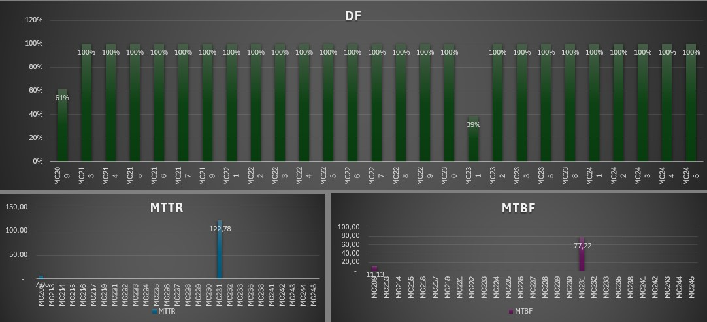
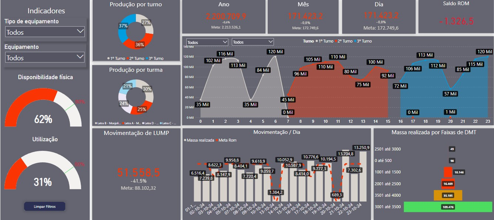
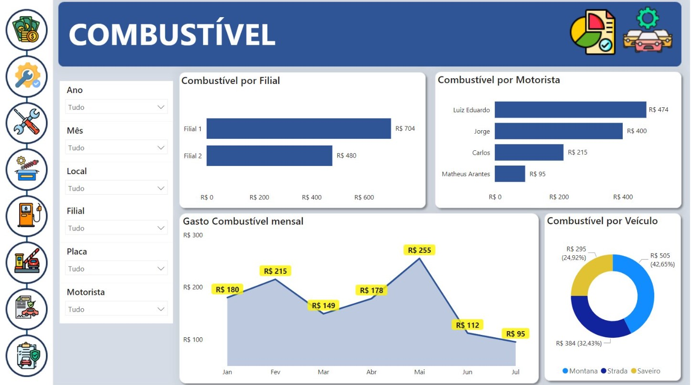

Principais Funcionalidades
- Registro automático de falhas e manutenções
- Acompanhamento de tempo de reparo (MTTR) e frequência de falhas (MTBF)
- Relatórios de disponibilidade e performance


Graduando em Engenharia de software | SQL, PYTHON, DAX, JS, CSS e HTML
🎓 Graduando em Engenharia de Software, com sólida formação técnica e experiência prática em tecnologia, mineração, hardware e robótica.
Iniciei minha carreira na área de TI e migrei para a mineração, onde atuei na gestão de frota e análise operacional de lavra.
Atualmente, trabalho como Analista de Gestão Administrativa, focando em planejamento estratégico, controle de despesas e otimização de processos internos.
Criação de soluções para logística e manutenção, incluindo aplicações web e bancos de dados.
Experiência avançada em Excel e Power BI, com forte enfoque em modelagem de dados e criação de dashboards analíticos.
Atuação em gestão de recursos, análise de despesas orçamentárias, controle de inventário e suporte a áreas de negócios por meio de relatórios gerenciais e indicadores de desempenho.
Vasta experiência em definição, monitoramento e análise de KPIs estratégicos para suporte à tomada de decisão.
Este dashboard foi desenvolvido para monitorar em tempo real os principais KPIs da operação de mina, incluindo a produtividade dos equipamentos, os custos operacionais e a eficiência do processo de lavra.


O sistema de controle de manutenção que desenvolvi permite o acompanhamento detalhado de todas as intervenções realizadas nos equipamentos, com destaque para o tempo de reparo, tipo de falha e status de disponibilidade.

Email: vinicius0216123061@gmail.com